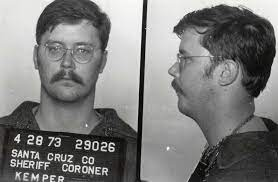

Asesinos de Estados Unidos
Ed Kemper
Edmund Emil Kemper III, más conocido como Edmund Kemper, es un asesino en serie estadounidense al que también se le conoce como El asesino de las colegialas, que estuvo activo en la década de 1970
E metodo que usaba era que subia a chicas a su coche para llevarlas a a escuela, en el trayecto de autopistas las llevaba a una zona aislada para matarlas, para posteriormente cometer necrofilia y despues desmembrar os cuerpos. Solia quedarse con las cabezas y tener sexo con estas. Era su forma de descargar su odio hacia las mujeres por el rencor que le tenia a su madre por la humillacion que le hizo pasar.
Ted Bundy
Theodore Robert Bundy fue un asesino en serie estadounidense. Después de más de una década negándolo, confesó 30 homicidios de mujeres estadounidenses, que cometió en 7 estados, entre 1974 y 1978. Se desconoce el número real de víctimas, se calcula que fueron mas de 100 pero solo se le culpan de 30.
no tenia un metodo en especifico, sus victimas normalmente eran jovenes muy bien parecidas de cabello castaño.
John Wayne Gacy
conocido también como Pogo, el payaso o El payaso asesino, fue un asesino en serie estadounidense que violó y mató a más de 30 hombres jóvenes, en su mayoría menores, entre 1972 y 1978.
De sus víctimas, 29 fueron enterradas en el semi-sótano de su propia casa, tres en diferentes lugares de la casa, y otras cuatro fueron lanzadas a un río cercano. Se le llamó "El payaso asesino" porque hacía servicios sociales en desfiles y fiestas para niños vestido de payaso, donde se hacía llamar "Pogo el payaso", personaje que creó él mismo.
Su metodo era que contrataba a jovenes entre 14 a 21 años, les ofrecia tranvajo en su empresa y los llebaba a su casa para platicar con ellos y ofrecerles mejores trabajos, en este lugar les ponia algo en las bebidas hasta que quedaban drogado he inconcientes, abusaba y con sus propios brazos asesinaba a sus victimas.